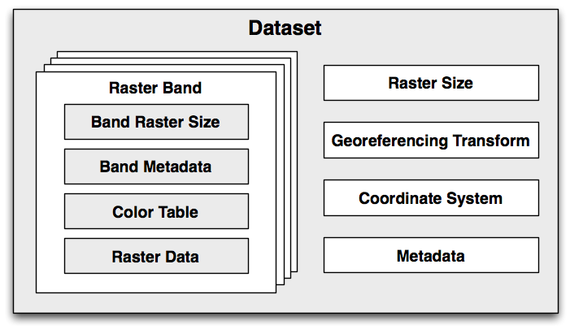
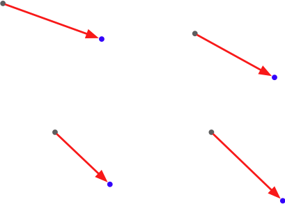
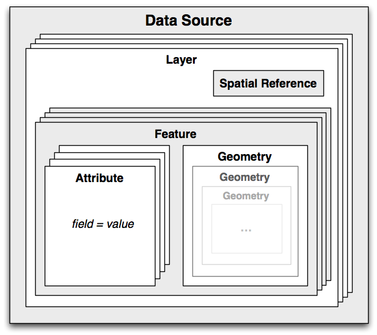

读取和写入地理空间数据#
Reading and writing geospatial data
虽然理论上你可以编写自己的解析器来读取特定的地理空间数据格式，但使用现有的 Python 库来执行此操作要容易得多。我们将介绍两个用于读取和写入地理空间数据的流行库：GDAL 和 OGR。
While you could in theory write your own parser to read a particular geospatial data format, it is much easier to use an existing Python library to do this. We will look at two popular libraries for reading and writing geospatial data: GDAL and OGR.
GDAL/OGR#
GDAL/OGR
不幸的是，这两个库的命名相当混乱。 地理空间数据抽象库 (GDAL) 最初只是一个用于处理栅格地理空间数据的库，而单独的 OGR 库则用于处理矢量数据。然而，这两个库现在部分合并，通常以“GDAL”的组合名称一起下载和安装。为了避免混淆，我们将这个组合库称为 GDAL/OGR，并使用“GDAL”来指代栅格转换库。
GDAL 的默认安装支持读取 116 种不同的栅格文件格式，并写入 58 种不同的格式。OGR 默认支持读取 56 种不同的矢量文件格式，并写入 30 种格式。这使得 GDAL/OGR 成为最强大的地理空间数据转换器之一，当然也是用于读取和写入地理空间数据的最有用的免费库。
Unfortunately, the naming of these two libraries is rather confusing. Geospatial Data Abstraction Library (GDAL), was originally just a library for working with raster geospatial data, while the separate OGR library was intended to work with vector data. However, the two libraries are now partially merged, and are generally downloaded and installed together under the combined name of “GDAL”. To avoid confusion, we will call this combined library GDAL/OGR and use “GDAL” to refer to just the raster translation library.
A default installation of GDAL supports reading 116 different raster file formats, and writing to 58 different formats. OGR by default supports reading 56 different vector file formats, and writing to 30 formats. This makes GDAL/OGR one of the most powerful geospatial data translators available, and certainly the most useful freely-available library for reading and writing geospatial data.
GDAL 设计#
GDAL design
GDAL 使用以下数据模型来描述栅格地理空间数据：
{kind=link}
我们来看看这个模型的各个部分：
数据集 (dataset) 包含所有的栅格数据，形式为一系列栅格“波段”，以及所有这些波段共有的信息。一个数据集通常代表一个单独文件的内容。
栅格波段 (raster band) 代表图像中的一个波段、通道或层。例如，RGB 图像数据通常会有单独的波段来表示图像中的红色、绿色和蓝色分量。
栅格大小 (raster size) 指定图像的整体宽度和高度，以像素为单位。
- 地理参考变换 (georeferencing transform) 将 (x, y) 栅格坐标转换为地理参考坐标，即地球表面的坐标。GDAL 支持两种类型的地理参考变换：仿射变换和地面控制点 (GCPs)。
仿射变换 (affine transformation) 是一种数学公式，允许对栅格数据应用以下操作：
可以一次应用多种这些操作；这允许你执行复杂的变换，如旋转。
备注
仿射变换有时被称为线性变换。
地面控制点 (Ground Control Points, GCPs) 将栅格中的一个或多个位置与其对应的地理参考坐标相关联，如下图所示：
注意，GDAL 并不会使用 GCPs 来转换坐标——这通常由应用程序完成，且通常涉及复杂的数学函数来执行转换。
坐标系统 (coordinate system) 描述由地理参考变换产生的地理参考坐标。坐标系统包括投影、基准面、以及栅格数据使用的单位和比例。
元数据 (metadata) 包含关于整个数据集的附加信息。
{kind=link}
{kind=link}
每个栅格波段包含以下内容（以及其他内容）：
波段栅格大小 (band raster size)：这是该波段内数据的大小（横向像素数和纵向行数）。这可能与整个数据集的栅格大小相同，此时数据集为全分辨率，或者该波段的数据需要进行缩放以匹配数据集。
一些**波段元数据**，提供该波段特定的额外信息。
颜色表 (color table)，描述如何将像素值转换为颜色。
**栅格数据**本身。
GDAL 提供了多个**驱动程序 (drivers)**，允许你读取（有时也能写入）各种类型的栅格地理空间数据。在读取文件时，GDAL 会根据数据类型自动选择合适的驱动程序；在写入时，你首先选择驱动程序，然后告诉驱动程序创建你想要写入的新数据集。
GDAL uses the following data model for describing raster geospatial data:
Let’s take a look at the various parts of this model:
A dataset holds all the raster data, in the form of a collection of raster “bands”, along with information that is common to all these bands. A dataset normally represents the contents of a single file.
A raster band represents a band, channel, or layer within the image. For example, RGB image data would normally have separate bands for the red, green, and blue components of the image.
The raster size specifies the overall width and height of the image, in pixels.
- The georeferencing transform converts from (x, y) raster coordinates into georeferenced coordinates—that is, coordinates on the surface of the earth. There are two types of georeferencing transforms supported by GDAL: affine transformations and ground control points.
An affine transformation is a mathematical formula allowing the following operations to be applied to the raster data:
More than one of these operations can be applied at once; this allows you to perform sophisticated transforms such as rotations.
备注
Affine transformations are sometimes referred to as linear transformations.
Ground Control Points (GCPs) relate one or more positions within the raster to their equivalent georeferenced coordinates, as shown in the following figure:
Note that GDAL does not translate coordinates using GCPs—that is left up to the application, and generally involves complex mathematical functions to perform the transformation.
The coordinate system describes the georeferenced coordinates produced by the georeferencing transform. The coordinate system includes the projection and datum, as well as the units and scale used by the raster data.
The metadata contains additional information about the dataset as a whole.
Each raster band contains the following (among other things):
The band raster size: This is the size (number of pixels across and number of lines high) for the data within the band. This may be the same as the raster size for the overall dataset, in which case the dataset is at full resolution, or the band’s data may need to be scaled to match the dataset.
Some band metadata providing extra information specific to this band.
A color table describing how pixel values are translated into colors.
The raster data itself.
GDAL provides a number of drivers which allow you to read (and sometimes write) various types of raster geospatial data. When reading a file, GDAL selects a suitable driver automatically based on the type of data; when writing, you first select the driver and then tell the driver to create the new dataset you want to write to.
GDAL 示例代码#
GDAL example code
一个 数字高程模型 (DEM, Digital Elevation Model) 文件包含高度值。在下面的示例程序中，我们使用 GDAL 计算一个示例 DEM 文件中包含的高度值的平均值。本例使用从 GLOBE 高程数据集下载的 DEM 文件：
from osgeo import gdal, gdalconst
import struct
dataset = gdal.Open("data/e10g")
band = dataset.GetRasterBand(1)
fmt = "<" + ("h" * band.XSize)
totHeight = 0
for y in range(band.YSize):
scanline = band.ReadRaster(0, y, band.XSize, 1,
band.XSize, 1,
band.DataType)
values = struct.unpack(fmt, scanline)
for value in values:
if value == -500:
# 海洋的特殊高度值 -> 忽略
continue
totHeight = totHeight + value
average = totHeight / (band.XSize * band.YSize)
print "Average height =", average
备注
有关 GLOBE 数据集及如何下载示例数据的更多信息，请参阅第 4 章 地理空间数据的来源。
如你所见，该程序从 DEM 文件中获取单个栅格波段，然后逐条读取扫描行 (scanline)。接着，我们使用 Python 标准库模块 struct 来解析扫描行中的单个高度值。由于 GLOBE 数据集使用 -500 作为代表海洋的特殊高度值，我们在计算时会排除这些值。最后，我们使用剩余的高度值计算整个 DEM 数据文件的平均高度（单位：米）。
A Digital Elevation Model (DEM) file contains height values. In the following example program, we use GDAL to calculate the average of the height values contained in a sample DEM file. In this case, we use a DEM file downloaded from the GLOBE elevation dataset:
from osgeo import gdal,gdalconst
import struct
dataset = gdal.Open("data/e10g")
band = dataset.GetRasterBand(1)
fmt = "<" + ("h" * band.XSize)
totHeight = 0
for y in range(band.YSize):
scanline = band.ReadRaster(0, y, band.XSize, 1,
band.XSize, 1,
band.DataType)
values = struct.unpack(fmt, scanline)
for value in values:
if value == -500:
# Special height value for the sea -> ignore.
continue
totHeight = totHeight + value
average = totHeight / (band.XSize * band.YSize)
print "Average height =", average
备注
Please refer to Chapter 4, Sources of Geospatial Data, for more information on the GLOBE dataset and how to download the data used in this example.
As you can see, this program obtains the single raster band from the DEM file, and then reads through it one scanline at a time. We then use the struct standard Python library module to read the individual height values out of the scanline. Because the GLOBE dataset uses a special height value of -500 to represent the ocean, we exclude these values from our calculations. Finally, we use the remaining height values to calculate the average height, in meters, over the entire DEM data file.
OGR 设计#
OGR design
OGR 使用以下模型来处理基于矢量 (vector-based) 的地理空间数据：
{kind=link}
让我们更详细地了解这一设计：
数据源 (data source) 代表你正在处理的文件——但它不一定是一个文件。它也可以是一个 URL 或其他数据来源。
数据源包含一个或多个 图层 (layers)，每个图层表示一组相关的数据。例如，一个代表某个国家的单一数据源可能包含 “地形” 图层、”等高线” 图层、”道路” 图层和 “城市边界” 图层。而其他数据源可能仅由一个图层组成。每个图层都有一个空间参考 (spatial reference) 和一组要素 (features)。
空间参考 (spatial reference) 指定图层数据使用的投影和基准 (datum)。
要素 (feature) 代表图层中的某个重要元素。例如，一个要素可能代表一个州 (state)、一个城市 (city)、一条道路 (road)、一个岛屿 (island) 等。每个要素都有一组属性 (attributes) 和一个几何形状 (geometry)。
属性 (attributes) 提供关于要素的额外元信息。例如，一个城市要素可能有一个属性用于存储城市名称，另一个属性存储人口数量，还有一个属性存储用于从外部数据库检索额外信息的唯一 ID。
最后，几何形状 (geometry) 描述要素的物理形状或位置。几何形状是递归的数据结构，它们可以包含子几何形状 (sub-geometries)——例如，一个 “国家” (country) 要素可能由一个几何形状组成，该几何形状包含多个岛屿，每个岛屿都由主 “国家” 几何形状中的一个子几何形状表示。
OGR 中的几何设计基于 开放地理空间联盟 (OGC, Open Geospatial Consortium) 的 “Simple Features” 模型 来表示地理空间几何体。更多信息，请参阅：http://www.opengeospatial.org/standards/sfa。
与 GDAL 类似，OGR 也提供了多种 驱动程序 (drivers)，可以用于读取 (有时也可以写入) 各种类型的矢量地理空间数据。在读取文件时，OGR 会自动选择合适的驱动程序；在写入时，你需要先选择驱动程序，然后指示该驱动程序创建新的数据源进行写入。
OGR uses the following model for working with vector-based geospatial data:
Let’s take a look at this design in more detail:
The data source represents the file you are working with—though it doesn’t have to be a file. It could just as easily be a URL or some other source of data.
The data source has one or more layers, representing sets of related data. For example, a single data source representing a country may contain a “terrain” layer, a “contour lines” layer, a “roads” later, and a “city boundaries” layer. Other data sources may consist of just one layer. Each layer has a spatial reference and a list of features.
The spatial reference specifies the projection and datum used by the layer’s data.
A feature corresponds to some significant element within the layer. For example, a feature might represent a state, a city, a road, an island, and so on. Each feature has a list of attributes and a geometry.
The attributes provide additional meta-information about the feature. For example, an attribute might provide the name for a city’s feature, its population, or the feature’s unique ID used to retrieve additional information about the feature from an external database.
Finally, the geometry describes the physical shape or location of the feature. Geometries are recursive data structures that can themselves contain sub-geometries—for example, a “country” feature might consist of a geometry that encompasses several islands, each represented by a subgeometry within the main “country” geometry.
The geometry design within OGR is based on the Open Geospatial Consortium’s “Simple Features” model for representing geospatial geometries. For more information, see http://www.opengeospatial.org/standards/sfa.
Like GDAL, OGR also provides a number of drivers which allow you to read (and sometimes write) various types of vector-based geospatial data. When reading a file, OGR selects a suitable driver automatically; when writing, you first select the driver and then tell the driver to create the new data source to write to.
OGR 示例代码#
OGR example code
以下示例程序使用 OGR 读取 Shapefile 的内容，并打印出每个要素的 NAME 属性值以及几何类型：
from osgeo import ogr
shapefile = ogr.Open("TM_WORLD_BORDERS-0.3.shp")
layer = shapefile.GetLayer(0)
for i in range(layer.GetFeatureCount()):
feature = layer.GetFeature(i)
name = feature.GetField("NAME")
geometry = feature.GetGeometryRef()
print i, name, geometry.GetGeometryName()
The following example program uses OGR to read through the contents of a shapefile, printing out the value of the NAME attribute for each feature along with the geometry type:
from osgeo import ogr
shapefile = ogr.Open("TM_WORLD_BORDERS-0.3.shp")
layer = shapefile.GetLayer(0)
for i in range(layer.GetFeatureCount()):
feature = layer.GetFeature(i)
name = feature.GetField("NAME")
geometry = feature.GetGeometryRef()
print i, name, geometry.GetGeometryName()
文档#
Documentation
GDAL 和 OGR 都有很好的文档支持，但对于 Python 程序员来说，使用时可能会遇到一些问题。GDAL/OGR 库及其相关的命令行工具都是用 C 和 C++ 编写的。虽然它们提供了适用于多种语言（包括 Python）的绑定 (bindings)，但官方文档主要针对 C++ 版本的库。这给 Python 用户带来了一些阅读上的挑战——不仅所有方法签名 (method signatures) 都是 C++ 风格的，而且 Python 绑定版本对许多方法和类的名称进行了调整，使其更加符合 Python 习惯（”pythonic”）。
幸运的是，Python 版的 GDAL/OGR 具有良好的 自文档 (self-documenting) 特性 ，这要归功于 Python 绑定中嵌入的 docstrings。这意味着你可以使用 Python 自带的工具来查看相关文档，例如 pydoc。你可以在命令行运行以下命令来启动一个 GUI 界面，以便通过 Web 浏览器查看文档：
% pydoc -g osgeo
如果你只想查看某个方法或类的文档，可以直接在 Python 交互模式下使用 help() 命令，例如：
>>> import osgeo.ogr
>>> help(osgeo.ogr.DataSource.CopyLayer)
需要注意的是，并非所有方法都有详细的文档说明，因此在某些情况下，你仍然需要参考 GDAL 官网的 C++ 文档。此外，部分 docstrings 直接从 C++ 文档复制而来，可能不够清晰。不过，总体而言，GDAL/OGR 的文档质量较高，足以帮助你快速上手并熟练使用这个库。
GDAL and OGR are well documented, but with a catch for Python programmers. The GDAL/OGR library and associated command-line tools are all written in C and C++. Bindings are available which allow access from a variety of other languages, including Python, but the documentation is all written for the C++ version of the libraries. This can make reading the documentation rather challenging—not only are all the method signatures written in C++, but the Python bindings have changed many of the method and class names to make them more “pythonic”.
Fortunately, the Python libraries are largely self-documenting, thanks to all the docstrings embedded in the Python bindings themselves. This means you can explore the documentation using tools such as Python’s built-in pydoc utility, which can be run from the command line like this:
% pydoc -g osgeo
This will open up a GUI window allowing you to read the documentation using a web browser. Alternatively, if you want to find out about a single method or class, you can use Python’s built-in help() command from the Python command line, like this:
>>> import osgeo.ogr
>>> help(osgeo.ogr.DataSource.CopyLayer)
Not all the methods are documented, so you may need to refer to the C++ docs on the GDAL website for more information, and some of the docstrings are copied directly from the C++ documentation—but in general the documentation for GDAL/OGR is excellent, and should allow you to quickly come up to speed using this library.
可用性#
Availability
GDAL/OGR 可在现代 Unix 机器（包括 Linux 和 Mac OS X）以及大多数 Microsoft Windows 版本上运行。GDAL 的官方网站如下：
OGR 的官方网站如下：
要下载 GDAL/OGR，请访问 GDAL 官网并点击 Downloads 链接。 Windows 用户可能会发现 FWTools 软件包非常有用，它为 Win32 机器提供了丰富的地理空间软件，包括 GDAL/OGR 及其 Python 绑定。FWTools 可在以下地址获取：
对于运行 Mac OS X 的用户，可以从以下地址获取预编译的二进制文件：
http://www.kyngchaos.com/software/frameworks
备注
请确保安装 GDAL 1.9 或更高版本，因为本书中的示例代码需要该版本才能运行。
作为一个开源软件包，GDAL/OGR 的完整源代码可在官网获取，您可以自行编译。但对于大多数用户来说，直接使用预编译的二进制版本更加便捷。
GDAL/OGR runs on modern Unix machines, including Linux and Mac OS X, as well as most versions of Microsoft Windows. The main website for GDAL can be found at:
The main website for OGR is at:
To download GDAL/OGR, follow the Downloads link on the main GDAL website. Windows users may find the FWTools package useful, as it provides a wide range of geospatial software for win32 machines, including GDAL/OGR and its Python bindings. FWTools can be found at:
For those running Mac OS X, prebuilt binaries can be obtained from:
http://www.kyngchaos.com/software/frameworks
备注
Make sure that you install GDAL Version 1.9 or later, as you will need this version to work through the examples in this book.
Being an open source package, the complete source code for GDAL/OGR is available from the website, so you can compile it yourself. Most people, however, will simply want to use a prebuilt binary version.